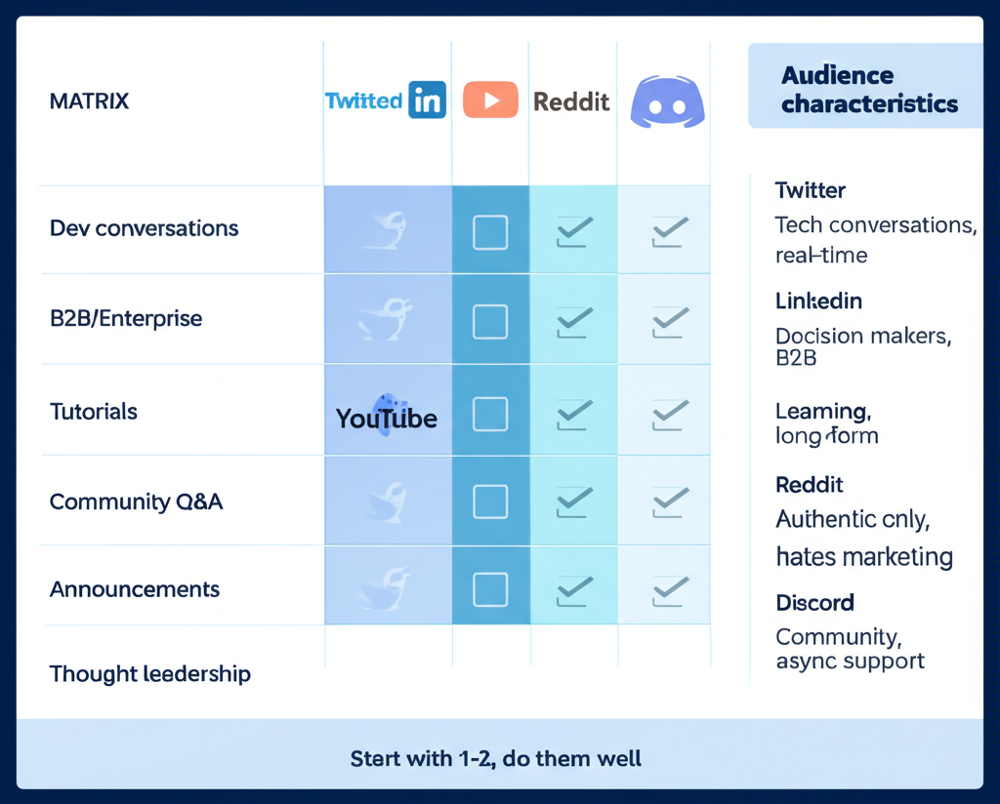
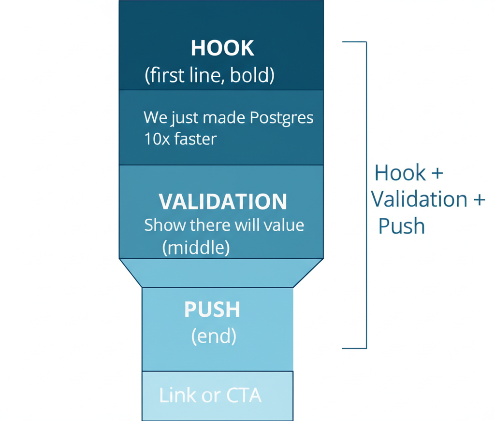

Part 1: Social Media Philosophy
What Works for Developers
Developers respond to:
- Authenticity over polish
- Value over promotion
- Technical depth over buzzwords
- Transparency over marketing speak
Platform Selection
- Twitter/X: Tech conversations, developer community
- LinkedIn: Professional, B2B, decision-makers
- YouTube: Educational content, tutorials
- Reddit: Community discussions (organic only)
- Discord: Community hubs
- Mastodon: Decentralized, dev-heavy, OSS-friendly
Part 2: Twitter/X Strategy
Learning from Supabase
Supabase has 28k+ followers with 100+ engagements on regular tweets. Here's why:
1. Understand your audience — Craft memes and jokes specifically for developer audience.
2. Talk in dev jargon — Don't dumb it down. Speak their language.
3. Make tweets pop in the feed — Even enterprise plan promotion can be engaging.
Tweet Format That Works
Hook + Validation + Push:
- Hook me with a story (to the point, developer speak)
- Validate with the middle part (showing there will be value)
- Push to the next tweet or link
Thread Formula
- First tweet: Hook with story
- Middle tweets: Deliver value
- Final tweet: CTA (link, action, engagement)
Code Snippets on Twitter
Tools for beautiful code images:
- carbon.now.sh (free, basic)
- snappify.io (freemium, more features)
Part 3: LinkedIn Strategy
Why LinkedIn Works for Dev Tools
- Engineering managers are there
- CTOs and VPs make decisions
- Enterprise buyers active
- Less noise than Twitter for B2B
Content Types That Work
1. Architecture diagrams + explanation — Devs like diagrams. Complex concept in one visual = shareable.
2. Personal founder stories — Behind-the-scenes of building.
3. Tactical learnings — "What I learned doing X at [Company]"
4. Controversial takes — (Respectfully) challenge conventional wisdom.
LinkedIn Hacks
- First comment boosts reach
- Ask questions to drive engagement
- Use formatting (bullets, line breaks)
- Post consistently at same time
The CEO/Founder Playbook
Why it works: Founders have authority developers respect. Technical founders especially.
Content mix:
- Company updates (20%)
- Industry insights (30%)
- Personal learnings (30%)
- Engagement with others (20%)
Part 4: Diagrams and Visual Content
Why Diagrams Go Viral
Diagrams "smell" like value. People share them to:
- Feel smart
- Help their network
- Signal expertise
Truth: Less than 2% actually follow the diagram. But they share it because it feels valuable.
Creating Shareable Diagrams
- Workflow/tool stack diagrams
- Architecture overviews
- Process flows
- Comparison visuals
Tools for Diagrams
- Excalidraw (hand-drawn style)
- Whimsical (clean, professional)
- Figma (custom design)
- Mermaid (code-based)
Part 5: Founder-Led Social
Why It Matters
PostHog insight: Technical founders being authentic on social creates trust that traditional marketing can't.
Content Strategy for Founders
Share:
- Building journey
- Technical decisions
- Team updates
- Industry perspective
- Authentic struggles
Avoid:
- Corporate marketing speak
- Overselling
- Only promotional content
Consistency Over Perfection
- Better: Regular, authentic posts
- Worse: Sporadic, polished content
Build habit around posting schedule.
Part 6: Social Listening
Why Listen
Understand:
- What developers struggle with
- How they talk about problems
- Competitor perception
- Your brand mentions
Tools for Listening
- Syften: Dev-focused (Twitter, Reddit, HN, Slack)
- SparkToro: Audience research
- Generic tools: Mention, Brand24
Acting on Insights
Comment monitoring: Great opportunities to help and promote naturally.
Competitor mentions: Understand positioning opportunities.
Pain point discussions: Content ideas and product feedback.
Part 8: Social for Launches
Launch Amplification
Pre-launch:
- Tease on social
- Inform community
- Line up supporters
Launch day:
- Coordinated team posts
- Engage with every comment
- Cross-platform presence
Post-launch:
- Share results
- Thank community
- Continue momentum
Social for HN/PH
When launching on HN or Product Hunt:
- Announce on social
- Ask for support (carefully)
- Share updates throughout day
Part 9: Video Content
Raw Video That Works
Kinde "Timer" video ad:
- Timer on screen
- Building something with product
- Real-time demonstration
- Feels authentic, not produced
TikTok-Style Content
Short, punchy videos for LinkedIn:
- 30-60 seconds
- One key message
- Feels native to social
- Not overproduced
YouTube Presence
For educational content:
- Tutorials
- Deep dives
- Product walkthroughs
- Conference talks
Part 10: Measuring Social
Metrics That Matter
Awareness:
- Impressions
- Reach
- Follower growth
Engagement:
- Comments
- Shares
- Saves
Conversion:
- Click-throughs
- Signups attributed
- Self-reported mentions
Self-Reported Attribution
Ask users: "How did you hear about us?"
Social often shows up here when software attribution misses it.
Don't Obsess Over Vanity
Engagement rate more valuable than raw follower count. Quality of comments more valuable than quantity.
Quick Reference: Social Checklist
Twitter/X
- Bio clearly states what you do
- Pinned tweet is high-value
- Consistent posting schedule
- Engaging with community
- Using dev jargon appropriately
- Founder profiles optimized
- Company page active
- Regular content (2-3x/week)
- Engaging in comments
- Using relevant hashtags
General
- Social listening set up
- Content calendar planned
- Team knows brand voice
- Metrics tracked
- Cross-posting strategy
Resources & Further Reading
Twitter/X Strategy
- Supabase Twitter Success Analysis — 28k+ followers breakdown
- Lee Robinson on Developer Marketing — Vercel's approach
LinkedIn Strategy
Visual Content
- Carbon — Beautiful code images
- Snappify — Code snippet sharing
- Excalidraw — Hand-drawn diagrams
- Whimsical — Professional diagrams
Social Listening
- Syften — Dev-focused social listening (Twitter, Reddit, HN, Slack)
- SparkToro — Audience research (Rand Fishkin)
Podcasts
- PostHog on Founder-Led Social — James Hawkins
- Social Strategy for Dev Tools — Markepear Podcast
Part 7: Community Comments
How to Plug Your Tool in Comments
Do:
Don't:
The Lee Robinson Approach
Lee (Vercel) is masterful at helpful comments that naturally mention the product. Value first, product second.